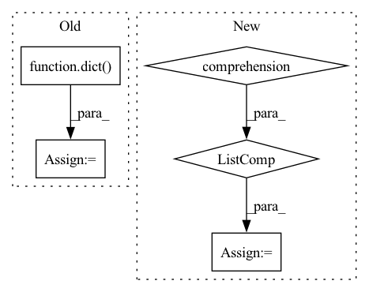

Pattern ID :36582
Before Change
output = model.tf_module(**input_dict)
// res = dict(size=size)
res = dict()
res.update(benchmark_speed(_benchmark, repeat, number, warmup))
return res
After Change
inputs = input_sample
input_sizes = [tuple(x.shape) for x in input_sample]
// inputs = [tf.constant(tf.random.uniform(i)) for i in input_sizes]
input_dict = dict(zip(model.inputs, inputs))
// size = len(model.tf_module)
In pattern: SUPERPATTERN
Frequency: 5
Non-data size: 5
Instances Fragment ID: 103943442
Project Name: toriml/dnn-bench
Commit Name: 6cab11fe99909d6ac6f38b8147f0e99ef28f62f2
Time: 2021-02-09
Author: talmaj@gmail.com
File Name: bench/bench_tf.py
M Class Name: AnonimousClass
N Class Name: AnonimousClass
M Method Name: benchmark_tf(5)
N Method Name: benchmark_tf(6)
M Parent Class:
N Parent Class:
M File Name: bench/bench_tf.py
N File Name: bench/bench_tf.py
M Start Line: 10
M End Line: 49
N Start Line: 38
N End Line: 48
Before Change
shared_data = dict(gradients=shared_grads, buffers=shared_buffers,
num_data_points=self.num_data_points if self.provide_num_data_points else None,
labels=labels if self.provide_labels else None)
true_user_data = dict(data=data, labels=labels)
return shared_data, true_user_data
After Change
// Share differential to server version:
// This is equivalent to sending the new stuff and letting the server do it, but in line
// with the gradients sent in UserSingleStep
shared_grads += [[p_local - p_server for (p_local, p_server) in zip(self.model.parameters(), parameters)] ]
shared_buffers += [[b.clone().detach() for b in self.model.buffers()]]
shared_data = dict(gradients=shared_grads, buffers=shared_buffers, Fragment ID: 103943458
Project Name: jonasgeiping/breaching
Commit Name: 1ab2867fea20551797c9aea8ae67099093ec7180
Time: 2021-10-01
Author: jonas.geiping@googlemail.com
File Name: breaching/cases/users.py
M Class Name: UserMultiStep
N Class Name: UserMultiStep
M Method Name: compute_local_updates(2)
N Method Name: compute_local_updates(2)
M Parent Class: UserSingleStep
N Parent Class: UserSingleStep
M File Name: breaching/cases/users.py
N File Name: breaching/cases/users.py
M Start Line: 151
M End Line: 187
N Start Line: 158
N End Line: 200
Before Change
last_step_key = list(observations.keys())[-1]
sub_step_return = self.compute_return(gamma=gamma, gae_lambda=gae_lambda,
rewards=rews, values=detached_values[last_step_key], dones=dones)
returns = dict()
for step_id in values.keys():
returns[step_id] = sub_step_return
return returns, values, detached_valuesAfter Change
sub_step_return = self.compute_return(gamma=gamma, gae_lambda=gae_lambda,
rewards=rews, values=detached_values[-1], dones=dones)
returns = [sub_step_return for _ in values]
return returns, values, detached_values
def compute_return(self,
gamma: float, Fragment ID: 103943443
Project Name: enlite-ai/maze
Commit Name: af9ee41dd811ec837af39488dce7e4b4723a7ab6
Time: 2021-04-29
Author: office@enlite.ai
File Name: maze/core/agent/torch_state_critic.py
M Class Name: TorchStateCritic
N Class Name: TorchStateCritic
M Method Name: bootstrap_returns(4)
N Method Name: bootstrap_returns(6)
M Parent Class: TorchModel,StateCritic
N Parent Class: TorchModel,StateCritic
M File Name: maze/core/agent/torch_state_critic.py
N File Name: maze/core/agent/torch_state_critic.py
M Start Line: 102
M End Line: 138
N Start Line: 120
N End Line: 131
Before Change
joints: np.ndarray = self.get_joints(anno)
mask: np.ndarray = self.get_mask(anno, image_info)
extras = dict(file_name=image_info["file_name"])
return orig_image, mask, joints, extras
def get_joints(self, anno: List[Mapping[str, Any]]) -> np.ndarray:After Change
anno = self.coco.loadAnns(ann_ids)
gt_iscrowd = np.array([bool(ann["iscrowd"]) for ann in anno]).reshape((-1))
gt_bboxes = np.array([ann["bbox"] for ann in anno] , dtype=np.float32).reshape((-1, 4))
gt_areas = np.array([ann["area"] for ann in anno], dtype=np.float32).reshape((-1))
orig_image = cv2.imread(file_path, cv2.IMREAD_COLOR | cv2.IMREAD_IGNORE_ORIENTATION) Fragment ID: 103943451
Project Name: deci-ai/super-gradients
Commit Name: ca5c56214e3ad7953a6e420a662c199b09dcd8fd
Time: 2023-02-22
Author: ekhvedchenya@gmail.com
File Name: src/super_gradients/training/datasets/pose_estimation_datasets/coco_keypoints.py
M Class Name: COCOKeypointsDataset
N Class Name: COCOKeypointsDataset
M Method Name: load_sample(2)
N Method Name: load_sample(2)
M Parent Class: BaseKeypointsDataset
N Parent Class: BaseKeypointsDataset
M File Name: src/super_gradients/training/datasets/pose_estimation_datasets/coco_keypoints.py
N File Name: src/super_gradients/training/datasets/pose_estimation_datasets/coco_keypoints.py
M Start Line: 77
M End Line: 88
N Start Line: 87
N End Line: 101
Before Change
targets = ["E_PBE0", "E_max_EINDO", "I_max_ZINDO", "HOMO_ZINDO", "LUMO_ZINDO", "E_1st_ZINDO", "IP_ZINDO", "EA_ZINDO", "HOMO_PBE0", "LUMO_PBE0", "HOMO_GW", "LUMO_GW", "alpha_PBE0", "alpha_SCS"]
targets_index = list(range(len(targets)))
targets2index = dict( zip(targets, targets_index))
y = df["T"].T[targets2index[target]]
drugs = df["X"]After Change
df = pd.DataFrame()
df["X"] = pd.Series([i for i in inx["X"]])
df = pd.concat([df, pd.DataFrame(inx["T"], columns = targets)], axis = 1)
df["ID"] = ["Drug " + str(i+1) for i in range(len(df))]
df.to_pickle("/Users/kexinhuang/Desktop/qm7b.pkl")
def QM8_9():
import deepchem as dc Fragment ID: 103943436
Project Name: mims-harvard/tdc
Commit Name: 77a6e4386efd75bd5d14443ee59d04cdfb98e3cc
Time: 2020-11-06
Author: kexinhuang@hsph.harvard.edu
File Name: data_process/QM_utils.py
M Class Name: AnonimousClass
N Class Name: AnonimousClass
M Method Name: QM7_process(3)
N Method Name: QM7_process(3)
M Parent Class:
N Parent Class:
M File Name: data_process/QM_utils.py
N File Name: data_process/QM_utils.py
M Start Line: 13
M End Line: 27
N Start Line: 17
N End Line: 25